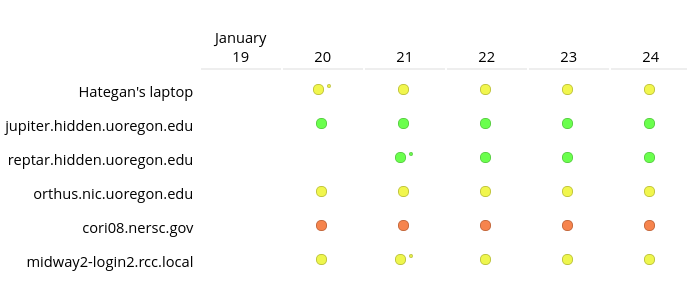

                <v-row class="page-start">
                    <v-col align="center">
                        <v-card align="left" class="mb-6 vbox">
                            <h2><i class="fas fa-chart-bar"></i> Site status</h2>
                            <div>
                                
                                <p>
                                    The <a href="https://testing.exaworks.org">site status dashboard</a> shows
                                    current and past test results for the Python binding of
                                    <span class="psij-font">PSI/J</span> on all sites on which test results
                                    are reported.
                                </p>
                            </div>
                        </v-card>

                        <v-card align="left" class="mb-6 vbox">
                            <h2><i class="fab fa-slack"></i> Slack</h2>
                            <div>
                                <p>
                                    We use <a
                                        href="https://join.slack.com/t/exaworks/shared_invite/zt-gttapi1i-GSaiHd8Q0h7uKyZnIqAUwQ">Slack</a>
                                    for various conversations about
                                    both the <span class="psij-font">PSI/J</span> specification and the Python
                                    binding.
                                </p>
                            </div>
                        </v-card>

                        <v-card align="left" class="mb-6 vbox">
                            <h2><i class="fab fa-github"></i> GitHub Discussions</h2>
                            <div>
                                <p>
                                    For something closer to a mailing list, please use GitHub Discussions
                                    for <a href="https://github.com/ExaWorks/psij-python/discussions">PSI/J Python</a>
                                    or the <a href="https://github.com/ExaWorks/job-api-spec/discussions">PSI/J Specification</a>.
                                </p>
                            </div>
                        </v-card>
                    </v-col>
                </v-row>
